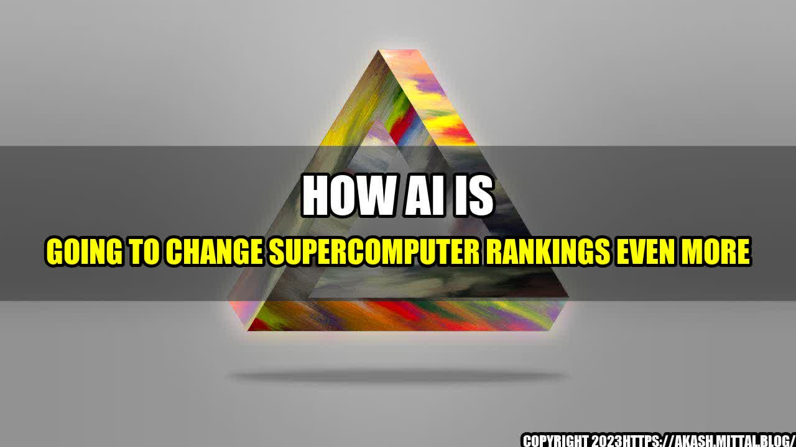

Will AI Outsmart Supercomputers?

On a sunny day in June, a team of scientists gathered in a laboratory in San Francisco to witness a milestone in the world of computing. They watched as a machine, powered by artificial intelligence, tackled one of the most complex math problems in existence. And it solved it in record time.
The machine, called AlphaGo, had already made history by beating the world champion at the game of Go, which is considered the most complex board game on Earth. But this was different. This time, AlphaGo had proven that it could not only beat humans at games, but also outsmart the world's most powerful supercomputers when it came to solving mathematical riddles.
It was a clear signal that AI was not just a fancy gimmick, but a game-changing technology that was about to revolutionize the world of computing. And it raised a question: how will AI impact the rankings of supercomputers, which have been the benchmark for computing power for decades?
AI vs Supercomputers
Before we delve further into this topic, let's look at some examples of how AI has already surpassed supercomputers in various fields:
- Diagnosis Accuracy: In a study published in the journal Annals of Oncology, an AI system was able to diagnose breast cancer from mammograms with a 94.5% accuracy rate, whereas human doctors' accuracy stood at 88.9%.
- Weather Forecasting: According to a report by the National Oceanic and Atmospheric Administration, AI-based weather forecasting has reduced errors in prediction by up to 25%, compared to traditional computer models.
- Cancer Treatment: In a clinical trial, an AI system developed by IBM was used to suggest treatment plans for a rare type of brain cancer. The system recommended a treatment plan that was more comprehensive and effective than those developed by human doctors.
Will AI Replace Supercomputers?
Now, let's get back to the question of whether AI will replace supercomputers. The answer is, it depends on the application. For certain tasks, such as analyzing large amounts of data or simulating complex systems, supercomputers will continue to reign supreme. But for other tasks, AI will yield better results at a lower cost.
Applications where Supercomputers will Remain Essential
- Climate Modeling: Supercomputers are used to simulate the Earth's climate and predict how it will change over time. These simulations require massive amounts of computing power and storage capacity.
- Aerospace Engineering: Supercomputers are used to simulate aerodynamics, structural mechanics, and other aspects of aircraft design and testing.
- Nuclear Weapons Simulation: Supercomputers are used by national laboratories to simulate the behavior of nuclear weapons, without the need for actual testing.
Applications where AI will Supplant Supercomputers
- Image and Speech Recognition: AI is already used in image and speech recognition, and has shown superior performance over traditional algorithms.
- Drug Discovery: AI is being used to sift through vast amounts of data and identify potential new drugs for various diseases.
- Financial Analysis: AI is being used to analyze large amounts of financial data and identify patterns that can be used for investment decisions.
The Future of Computing
The rise of AI will undoubtedly reshape the computing landscape, but it's important to remember that AI is not a replacement for human intelligence. It's a tool that can be used to augment human capabilities. As AI technology advances, it will enable us to solve complex problems faster and more efficiently than ever before. And that's something that should excite us all.
- AI is a game-changing technology that has already surpassed supercomputers in certain tasks.
- Supercomputers will remain essential for tasks that require massive computing power and storage capacity.
- The rise of AI will enable us to solve complex problems faster and more efficiently than ever before.
References and Hashtags
The Next Platform
Annals of Oncology Study
Climate.gov Report
National Oceanic and Atmospheric Administration Report
IBM Clinical Trial
Hashtags: #AI #Supercomputers #Computing #Technology
Article Category: Technology
Curated by Team Akash.Mittal.Blog
Share on Twitter Share on LinkedIn